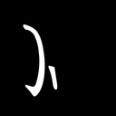
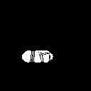
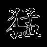

{kind=link}
s323802e86a1d
先判断：明显结构异常 / 合法可接受 / 不确定或不可读。
判断后展开原字、完整笔画和 mask
来源字：猛；间隙堵塞；原笔画序号（从 1 开始）：[2, 7]



{"added_stroke_count": 1.0, "attempts": 2.0, "blocked_length_96": 8.0, "blocked_length_fraction": 1.0, "bridge_centerline_length_96": 21.0, "bridge_thickness_96": 10.0, "changed_fraction": 0.16915584415584414, "gap_consumed_fraction": 1.0, "gate_end_x_96": 42.0, "gate_end_y_96": 59.0, "gate_start_x_96": 36.0, "gate_start_y_96": 59.0, "gate_width_96": 5.0, "glyph_scale": 96.0, "input_changed_fraction": 0.1836019621583742, "input_changed_pixels": 262.0, "input_edge_changed_pixels": 123.0, "input_foreground_changed_pixels": 162.0, "local_stroke_width": 6.666666666666667, "local_stroke_width_96": 5.0, "new_core_pixels_96": 125.0, "new_solid_area_96": 62.0, "new_solid_fraction": 0.043447792571829014, "new_solid_length_96": 11.0, "new_solid_radius_96": 3.59689998626709, "original_gap_area_96": 34.0, "original_gap_length_96": 8.0, "passage_end_x_96": 39.0, "passage_end_y_96": 61.0, "passage_start_x_96": 38.0, "passage_start_y_96": 56.0, "roi_x0_96": 37.0, "roi_x1_96": 42.0, "roi_y0_96": 55.0, "roi_y1_96": 63.0}下载操作前后笔画层（NPZ）